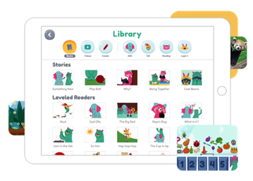
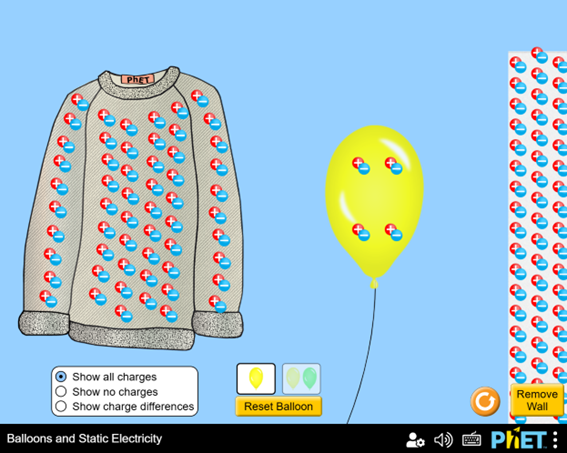

Modelos de Evaluación y RED
Explora modelos de evaluación y recursos educativos digitales.
Explora modelos de evaluación y recursos educativos digitales.
Área de Conocimiento: Esta herramienta incluye una amplia cantidad de áreas para el desarrollo de los estudiantes, como matemáticas, ciencias, programación, historia, economía, habilidades de vida, entre otros.
Nivel o Grado de Aplicación: Khan Academy ofrece su amplia gama de herramientas para estudiantes desde el nivel de básica primaria, educación media y educación superior, hasta recursos para docentes e incluso para los padres de familia.
Datos del Autor(es): La fundación Khan Academy fue fundada por Salman Khan.
Enlace al Repositorio: https://www.khanacademy.org/
Enlace al RED: Khan Academy. (n.d.). Khan Academy: Free online courses, lessons & practice.
Descripción del RED: Khan Academy es una plataforma educativa completamente gratuita que ofrece lecciones en forma de video, ejercicios interactivos y formas de evaluar los conocimientos aprendidos en las diferentes áreas de estudio. Esta plataforma está diseñada principalmente para fortalecer el aprendizaje autónomo y reforzar las temáticas dentro y fuera del aula.
Características y Posibilidades de Uso:
Limitaciones del RED:
Verificación de Estándares: Khan Academy está alineado con estándares internacionales como el CCSS (Common Core State Standards) de Estados Unidos y otros marcos curriculares. Además, ofrece contenido específico para la preparación de exámenes estandarizados como el SAT, GMAT, etc.
Captura de Pantalla:
Área de Conocimiento: Esta herramienta se centra en las áreas de ciencias naturales (física, química, biología) y matemáticas.
Nivel o Grado de Aplicación: Educación básica, media y superior.
Datos del Autor(es): PhET es una fundación de la Universidad de Colorado Boulder, fundada en 2002 por el Premio Nobel Carl Wieman.
Enlace al Repositorio: University of Colorado Boulder. (n.d.). PhET: Free online physics, chemistry, biology, earth science and math simulations.
Enlace al RED: https://phet.colorado.edu/es/simulations
Descripción del RED: PhET nos ofrece simulaciones interactivas de forma gratuita sobre conceptos científicos y matemáticos. Estas simulaciones permiten que los estudiantes experimenten y visualicen diferentes fenómenos complejos de una forma intuitiva y divertida.
Características y Posibilidades de Uso:
Limitaciones del RED:
Verificación de Estándares: La herramienta PhET está alineada con estándares internacionales como NGSS (Next Generation Science Standards) y CCSS (Common Core State Standards). Además, desarrolla sus simulaciones en base a investigaciones educativas.
Captura de Pantalla:
